The short tour
Pujan
AI engineer. I automate the repetitive parts of engineering work, and I do it by building one component well and reusing it: reusable agent infrastructure, repeated pipeline stages, and the contracts that keep them honest.
- Agent setup
- Project continuity
- Content generation
- Inference routing
Current projects
Four tools I use every day. Each one has a repository you can read, one line that says what it does, and a short note you can play.
| Project | In one line | Repository |
|---|---|---|
| Agent Custom Setup | A project hands itself to a fresh AI agent, and the agent starts with the right rules instead of guessing. | repository |
| Project Continuity Modules | Long work survives a break: what changed, what was verified, and what is still open. | repository |
| Content Generation Modules | Writing and images that sound like a person rather than a template. | repository |
| Inference Recommendation Engine | Provider-neutral routing for model calls, decided by policy instead of a hard-coded provider. | repository |
Hear each project
One note per project, in the order above.
What it does
A project hands itself to a fresh AI agent and the agent starts with the right rules instead of guessing. It pins the versions of the tools a project depends on, checks that the pinned code is the code that actually loaded, and fails the install when it is not. It is the reason this page's own repository cannot silently drift from the versions it claims.
What it does
Long work survives a break. Checkpoints record what changed, what was verified, and what is still open; a GitHub issue owns the scope; a pull request can only merge after the required checks pass, and a missing or skipped check fails closed rather than open.
What it does
Writing and images that sound like a person rather than a template. It routes each kind of human-facing output to its own contract, keeps generated filenames speakable, and records where every image came from: its prompt, its role, its dimensions, and the review that accepted it.
What it does
Provider-neutral routing for model calls. It recommends an inference route from an explicit policy instead of a hard-coded provider, and it is tested with property-driven tests rather than example fixtures.
What is shipped, and what is not
Shipped here means three things: a public repository, a passing check suite, and a written record of what the thing does not do yet. Nothing on this page claims a support promise.
| Project | State | Evidence |
|---|---|---|
| Agent Custom Setup | In daily use | Public module registry, a required-check workflow, 11 open issues tracking what is unfinished |
| Project Continuity Modules | In daily use | Published CLI and protocol spec, 31 open issues, adopted by the repositories on this page |
| Content Generation Modules | In daily use | Versioned module set with a validator, a changelog, and a released tag; this page is built against it |
| Inference Recommendation Engine | Working, still moving | MIT licensed, property-driven test suite, 14 open issues |
| design-bakery.com | Live | The site this page's palette and shapes come from |
Not shipped: no hosted service, no package on a public registry, and no benchmark result. Where something has not been measured, this page says so instead of implying it.
Featured project
Agent Custom Setup
It is the piece the other three sit on. Every other repository here starts a session by loading it, so if it is wrong, everything downstream is wrong in a way that looks fine. It is also the smallest honest example of the habit: a version pin, a check that the pin is what actually loaded, and a hard failure when it is not.
Repository · Module registry · Policy
What changed today
2026-10-01: 20 commit(s) across 3 project(s).
| Project | Commits today | Last push |
|---|---|---|
| octo-database | 15 | 2026-10-01 |
| content-generation-modules | 4 | 2026-10-01 |
| Pukujan | 1 | 2026-10-01 |

Current project: agent-custom-setup with 91 commit(s) in the last 7 days.

Total public stars: 1. That is a small number. The work is early, the count is real, and neither is a reason to round it up.
All public repositories
| Repository | Last push | Language | Stars |
|---|---|---|---|
| octo-database | 2026-10-01 | TypeScript | 0 |
| sanitizer-probe | 2026-10-01 | - | 0 |
| content-generation-modules | 2026-10-01 | Python | 0 |
| stylish-profile | 2026-10-01 | Python | 0 |
| Pukujan | 2026-10-01 | - | 0 |
| inference-recommendation-engine | 2026-09-30 | Python | 0 |
| agent-custom-setup | 2026-09-30 | HTML | 1 |
| vastai-gpu-broker | 2026-09-30 | Python | 0 |
| omp-gui | 2026-09-29 | JavaScript | 0 |
| project-continuity-modules | 2026-09-29 | Python | 0 |
| agent-secret-vault | 2026-09-28 | - | 0 |
| doc-generation-modules | 2026-09-28 | HTML | 0 |
| Study-os | 2026-09-28 | Python | 0 |
| hades-product | 2026-09-27 | Python | 0 |
| multi-agent-modules | 2026-09-27 | Python | 0 |
| jev-classifier | 2026-09-26 | Python | 0 |
| research-action | 2026-09-25 | TypeScript | 0 |
| Eval-lab | 2026-09-25 | Python | 0 |
| design-bakery | 2026-09-24 | TypeScript | 0 |
| exportable-harness-modules | 2026-09-24 | Python | 0 |
| harness-on-steroids | 2026-09-23 | Python | 0 |
| custom-extensions | 2026-09-21 | JavaScript | 0 |
| test-repo | 2026-09-20 | Python | 0 |
| automated-agents | 2026-09-16 | - | 0 |
| fossil-demo | 2026-09-15 | - | 0 |
| fluffy-system | 2026-09-14 | JavaScript | 0 |
| fossil-core | 2026-09-14 | Python | 0 |
| ai-for-good | 2026-09-14 | TypeScript | 0 |
| healthcare-documents | 2026-09-13 | - | 0 |
| research-assurance-v2 | 2026-09-11 | Python | 0 |
| project-assurance-modules | 2026-09-07 | Python | 0 |
| study-os-pedagogical-IR | 2026-09-05 | Python | 0 |
| study-os-benchmarker | 2026-09-05 | Python | 0 |
| RA-plugin | 2026-09-03 | Python | 0 |
| interview-os-game | 2026-09-03 | - | 0 |
| legalgraph-rag-test | 2026-09-02 | Python | 0 |
| time-to-crawl | 2026-09-01 | Python | 0 |
| litigation-prompt-engineering | 2026-05-29 | JavaScript | 0 |
Listen
Five notes about the page itself. Each project also has its own note, up in Current projects.
Welcome to My Corner
Read the transcript
Hey, you found my corner of GitHub. I'm Pujan. I build AI systems for work that is heavy with documents, the kind of work where a mistake costs someone real time. Everything on this page has a public repository behind it, so you can check the work instead of taking my word for it.
Who I Am in Thirty Seconds
Read the transcript
Thirty seconds about me. I care about two things. Whether a system actually helps the person using it, and whether the next person can pick the work up without me. Most of my repositories are about the second one. I write tools that leave a trail, so you can see what was decided, what was checked, and what is still open.
The Short Tour
Read the transcript
Here is the short tour. Agent Custom Setup is how I hand a project to a fresh AI agent so it starts with the right rules instead of guessing. Project Continuity Modules is how long work survives a break: checkpoints, handoffs, and an issue that owns the scope. Content Generation Modules is how the writing and the pictures come out sounding like a person instead of a template. Three tools, one habit. Leave the trail behind you.
Why Loose Ends Matter
Read the transcript
A thought I keep coming back to. Long projects do not usually fail because the work was too hard. They fail because something got dropped. A decision nobody wrote down, a check nobody ran, a handoff nobody made. So I build for the loose ends. Not because the tooling is exciting, but because the alternative is a person at midnight trying to remember why a line of code exists.
What Is Still Being Built
Read the transcript
One honest note before you go. This page is new, and parts of the tooling behind it are still being built. The projects you see are real and public, and each one has an issue tracking what is done and what is not. If something here looks unfinished, that is usually because it is.

The two habits, moving


Those are the two things I actually automate. Everything else on this page is downstream of them.
Why this page looks the way it does

The only live elements here are ones I generate and commit myself. The illustrations come from the palette and the flat hand-drawn shapes of my own site, design-bakery.com. They are illustrations of the story, not screenshots, and not evidence of anything.
What you can check

Every claim on this page points at a public repository, and each of those repositories has an issue tracking what is done and what is not. The activity numbers are generated from the GitHub API by scripts/track_activity.py and committed by a scheduled workflow, so you can re-run it and get the same numbers. The illustrations are generated, and their prompts and review decisions are recorded in .content-system/. Nothing here is a benchmark result.